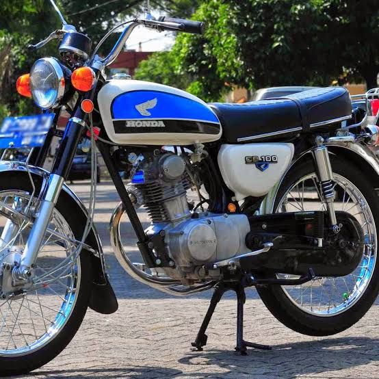
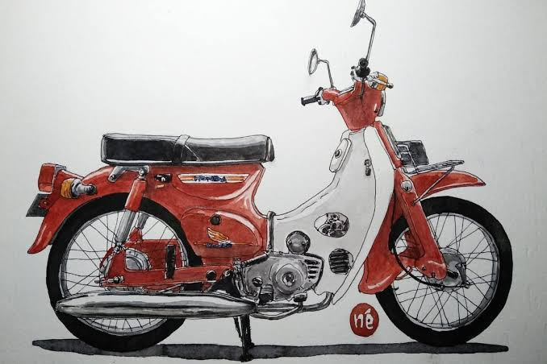
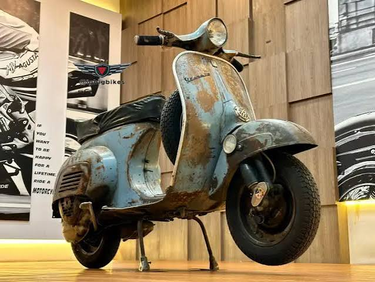
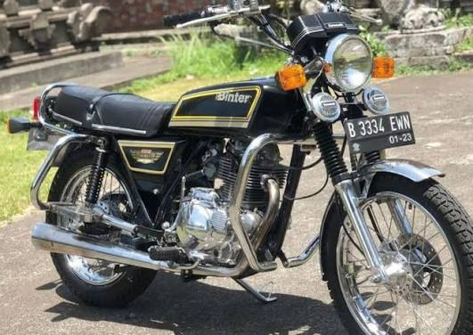

HONDA CB

Honda CB merupakan motor klasik yang terkenal
dengan desain sederhana dan elegan. Motor ini
memiliki daya tarik tersendiri bagi pecinta
otomotif karena bentuknya yang unik dan mudah
dikenali. Hingga sekarang, Honda CB masih banyak
dikoleksi dan dirawat oleh penggemarnya.
YAMAHA RX-KING

Yamaha RX-King adalah motor legendaris yang
terkenal dengan desain khas dan performa
mesinnya. Motor ini memiliki banyak penggemar
di Indonesia dan sering dijadikan koleksi
motor klasik.
HONDA C70

Honda C70 merupakan motor klasik yang memiliki
desain unik dengan bentuk membulat. Motor ini
dikenal sebagai motor jadul yang memiliki
nilai sejarah dan masih diminati kolektor.
VESPA KLASIK

Vespa klasik merupakan skuter legendaris yang
berasal dari Italia. Desainnya sangat khas
dengan bentuk bodi membulat dan tampilan retro
yang menarik. Vespa klasik memiliki banyak
penggemar di seluruh dunia.
KAWASAKI BINTER

Kawasaki Binter merupakan salah satu motor
klasik yang memiliki desain gagah dan elegan.
Motor ini menjadi salah satu kendaraan yang
diminati oleh kolektor motor lawas karena
memiliki tampilan yang khas dan menarik.